Toolkit · Chapter 3
Plotting from Zero
From your first line chart to a one-page market report: Matplotlib’s model of figures and axes, every chart a quant needs, styling that tells the truth, seaborn for statistics, Plotly for interactive dashboards, and animations.
A chart is often the first and the last thing in a piece of quant research: first to see the data before modelling it, last to show the result to someone who will decide on it. A good chart reveals a bug in seconds (a price that jumps because of an unadjusted split, a backtest that is suspiciously smooth); a bad one hides it.
This chapter teaches Matplotlib, the foundation that pandas, seaborn and most scientific Python use, then two libraries built on top of the same ideas: seaborn for statistical charts in one line, and Plotly for interactive charts you can zoom and hover in a browser.
Like you’re five
A Matplotlib picture is a sheet of paper (the figure) with one or more drawing boxes glued on it (the axes). Each box has its own rulers and its own lines, dots and bars. Making a chart is: get a sheet, choose how many boxes, draw in each box, write labels, and save.
Setup
import numpy as np
import pandas as pd
import matplotlib as mpl
import matplotlib.pyplot as plt
import matplotlib.dates as mdates
import matplotlib.ticker as mtick
from pathlib import Path
print("Matplotlib", mpl.__version__)
IMAGES = Path("images"); IMAGES.mkdir(exist_ok=True)
DATA = Path("datasets")
def save_fig(name, fig=None):
(fig or plt.gcf()).savefig(IMAGES / f"{name}.png", dpi=150, bbox_inches="tight")
def log_axis(ax, fmt="{:g}"):
"""Log y-axis with readable ticks (1, 2, 5, 10, ...) instead of 10^0 notation."""
ax.set_yscale("log")
ax.yaxis.set_major_locator(mtick.LogLocator(base=10, subs=(1, 2, 5)))
ax.yaxis.set_major_formatter(mtick.FuncFormatter(lambda v, _: fmt.format(v)))
ax.yaxis.set_minor_formatter(mtick.NullFormatter())
prices = pd.read_csv(DATA / "prices_long.csv", parse_dates=["date"])
close = prices.pivot(index="date", columns="ticker", values="adj_close")
rets = close.pct_change(fill_method=None)
fred = pd.read_csv(DATA / "fred_rates.csv", index_col="date", parse_dates=True)
R = {}
print(close.shape, rets.shape, fred.shape)
Matplotlib 3.11.2 (3983, 10) (3983, 10) (4131, 3)
The anatomy of a figure
There are two ways to use Matplotlib. The quick pyplot style (plt.plot(...)) draws on “the current axes”. The object-oriented style creates the figure and axes explicitly and calls methods on them. Use the object-oriented style for anything beyond a one-line check: it is unambiguous when there are several panels.
fig, ax = plt.subplots(figsize=(8, 4)) # one figure, one axes
ax.plot(close.index, close["SPY"], lw=1.2, label="SPY")
ax.plot(close.index, close["QQQ"], lw=1.2, label="QQQ")
ax.set_title("Adjusted prices") # axes title
ax.set_xlabel("date"); ax.set_ylabel("price ($)")
ax.legend(loc="upper left")
ax.grid(alpha=0.3)
save_fig("first_plot", fig)
plt.show()
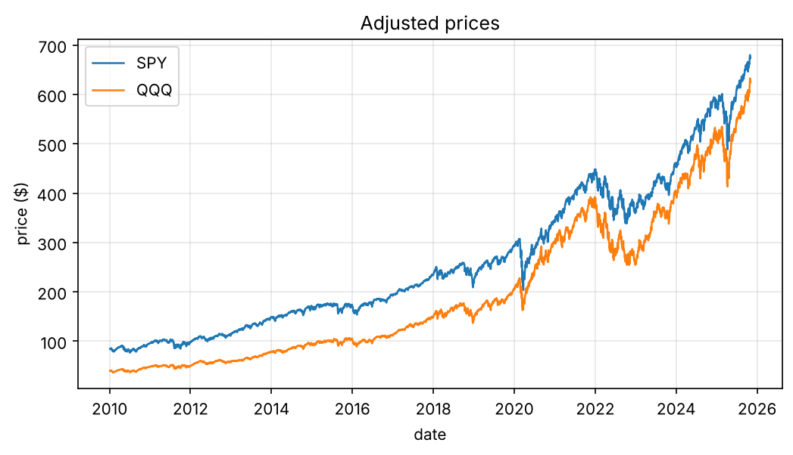
Everything on the chart is an object you can change: ax.xaxis, ax.spines["top"], every tick label, every line returned by ax.plot. The vocabulary:
| Object | What it is | How you reach it |
|---|---|---|
| Figure | the whole canvas | fig, fig.suptitle, fig.savefig |
| Axes | one plotting area with its own coordinates | ax (from plt.subplots) |
| Axis | the x or y ruler of an axes | ax.xaxis, ax.set_xlim, ax.set_yscale |
| Artist | anything drawn: lines, text, patches | returned by ax.plot, ax.text, … |
Choosing the right chart
| Question | Chart | Matplotlib |
|---|---|---|
| How does it change over time? | line | ax.plot |
| How are two variables related? | scatter | ax.scatter |
| How are values distributed? | histogram, box plot | ax.hist, ax.boxplot |
| How do categories compare? | bar | ax.bar, ax.barh |
| How do many pairs relate? | heatmap | ax.imshow, ax.pcolormesh |
| What share is each part? | stacked area | ax.stackplot |
Growth of $1: always compare on a common base
Raw prices are not comparable (SPY trades around 600, GLD around 300). Rebase each series to 1 at the start, and use a log scale, on which equal percentage moves have equal heights.
picks = ["SPY", "QQQ", "TLT", "GLD", "EEM"]
growth = close[picks].dropna()
growth = growth / growth.iloc[0]
fig, axes = plt.subplots(1, 2, figsize=(11, 4))
for t in picks:
axes[0].plot(growth.index, growth[t], lw=1, label=t)
axes[1].plot(growth.index, growth[t], lw=1, label=t)
axes[0].set_title("Linear scale: the late years dominate")
axes[1].set_title("Log scale: equal % moves look equal")
log_axis(axes[1], "${:g}") # helper from the setup cell
for a in axes:
a.set_ylabel("growth of $1"); a.grid(alpha=0.3)
axes[0].legend()
fig.tight_layout(); save_fig("growth_linear_log", fig)
plt.show()
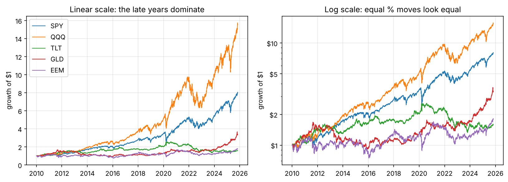
Trap
Long price histories on a linear scale exaggerate recent moves and hide early crashes. Use a log y-axis for anything that compounds: prices, wealth curves, index levels.
Distributions: histogram against the normal curve
r = rets["SPY"].dropna()
mu, sd = r.mean(), r.std()
fig, axes = plt.subplots(1, 2, figsize=(11, 4))
axes[0].hist(r, bins=120, density=True, alpha=0.6, label="SPY daily returns")
x = np.linspace(r.min(), r.max(), 400)
axes[0].plot(x, np.exp(-0.5 * ((x - mu) / sd) ** 2) / (sd * np.sqrt(2 * np.pi)), "k", lw=1.2, label="normal, same mean and sd")
axes[0].set_xlim(-0.06, 0.06); axes[0].legend(); axes[0].set_title("Peaked centre, fat tails")
axes[0].xaxis.set_major_formatter(mtick.PercentFormatter(1.0))
axes[1].boxplot([rets[t].dropna() for t in picks], tick_labels=picks, showfliers=True, flierprops={"markersize": 2, "alpha": 0.3})
axes[1].yaxis.set_major_formatter(mtick.PercentFormatter(1.0)); axes[1].set_title("Box plots: spread and outliers")
fig.tight_layout(); save_fig("distributions", fig)
plt.show()
R["n_4sd"] = int((np.abs(r - mu) > 4 * sd).sum())
R["n_4sd_normal"] = f"{len(r) * 2 * 3.17e-5:.1f}"
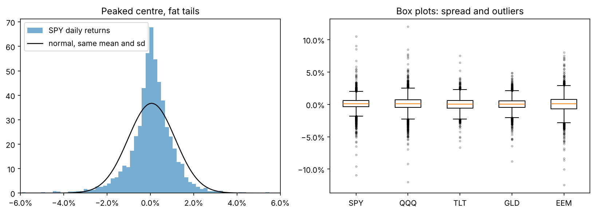
SPY had 28 days with moves beyond four standard deviations; a normal distribution would predict about 0.3. Financial ML Chapter 1 measures these fat tails properly.
Scatter plots and a fitted line
pair = rets[["SPY", "AAPL"]].dropna()
beta, alpha = np.polyfit(pair["SPY"], pair["AAPL"], 1)
fig, ax = plt.subplots(figsize=(5.5, 5))
ax.scatter(pair["SPY"], pair["AAPL"], s=4, alpha=0.25)
xs = np.array([-0.1, 0.1])
ax.plot(xs, alpha + beta * xs, "r", lw=1.5, label=f"slope (beta) = {beta:.2f}")
ax.axhline(0, color="k", lw=0.5); ax.axvline(0, color="k", lw=0.5)
ax.set_xlim(-0.1, 0.1); ax.set_ylim(-0.15, 0.15)
ax.set_xlabel("SPY daily return"); ax.set_ylabel("AAPL daily return"); ax.legend()
ax.set_aspect("equal", adjustable="box")
save_fig("scatter_beta", fig)
plt.show()
R["beta"] = f"{beta:.2f}"
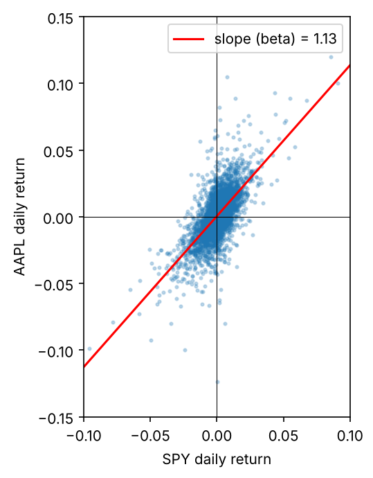
Apple's beta over the sample is 1.13: on average it moves 1.13% for every 1% move of the market.
Bars: annual returns
annual = close[["SPY", "TLT", "GLD"]].resample("YE").last().pct_change(fill_method=None).dropna()
annual.index = annual.index.year
fig, ax = plt.subplots(figsize=(11, 4))
w = 0.27
x = np.arange(len(annual))
for i, t in enumerate(annual.columns):
ax.bar(x + (i - 1) * w, annual[t], width=w, label=t)
ax.set_xticks(x, annual.index, rotation=0)
ax.yaxis.set_major_formatter(mtick.PercentFormatter(1.0))
ax.axhline(0, color="k", lw=0.8); ax.legend(ncols=3); ax.set_title("Calendar-year returns")
ax.grid(axis="y", alpha=0.3)
save_fig("annual_bars", fig)
plt.show()
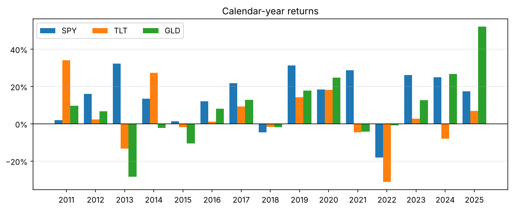
Several panels: subplots, shared axes and GridSpec
spy = close["SPY"]
dd = spy / spy.cummax() - 1
vol = rets["SPY"].rolling(21).std() * np.sqrt(252)
fig, axes = plt.subplots(3, 1, figsize=(10, 7), sharex=True, gridspec_kw={"height_ratios": [3, 1, 1]})
axes[0].plot(spy, lw=1); log_axis(axes[0]); axes[0].set_ylabel("SPY (log)")
axes[1].fill_between(dd.index, dd, 0, color="tab:red", alpha=0.5); axes[1].set_ylabel("drawdown")
axes[1].yaxis.set_major_formatter(mtick.PercentFormatter(1.0))
axes[2].plot(vol, lw=0.8, color="tab:purple"); axes[2].set_ylabel("21d vol")
axes[2].yaxis.set_major_formatter(mtick.PercentFormatter(1.0))
axes[2].xaxis.set_major_locator(mdates.YearLocator(2))
axes[2].xaxis.set_major_formatter(mdates.DateFormatter("%Y"))
for a in axes:
a.grid(alpha=0.3)
fig.suptitle("SPY: price, drawdown and volatility share one time axis")
fig.tight_layout(); save_fig("three_panel", fig)
plt.show()
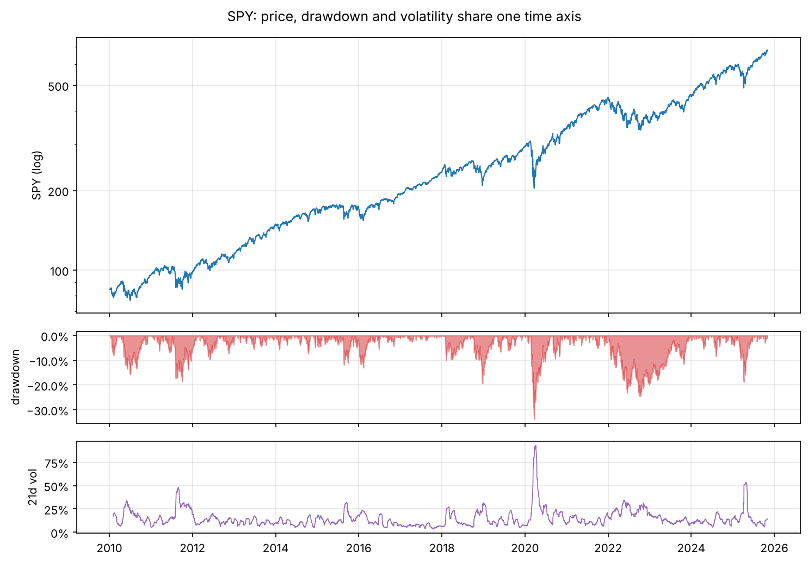
sharex=True keeps zooming and ticks consistent; height_ratios gives the main series more room; mdates.YearLocator and DateFormatter control date ticks. For irregular layouts, fig.add_gridspec or plt.subplot_mosaic("AAB;CCB") place panels of different sizes.
Annotations, twin axes and reference lines
A chart for a decision-maker should point at the thing that matters.
s = close["SPY"].loc["2019-10":"2021-03"]
low_date, low = s.idxmin(), s.min()
fig, ax = plt.subplots(figsize=(10, 4))
ax.plot(s, lw=1.3, label="SPY")
ax.annotate(f"COVID low {low_date:%d %b %Y}", xy=(low_date, low), xytext=(low_date + pd.Timedelta(days=45), low * 1.04),
arrowprops=dict(arrowstyle="->"), fontsize=10)
ax.axvspan(pd.Timestamp("2020-02-19"), pd.Timestamp("2020-03-23"), color="tab:red", alpha=0.12, label="crash window")
ax2 = ax.twinx() # a second y-axis on the right
ax2.plot(fred.loc[s.index[0]:s.index[-1], "VIXCLS"].dropna(), color="tab:orange", lw=1, label="VIX (right)")
ax2.set_ylabel("VIX")
lines = ax.get_legend_handles_labels(); lines2 = ax2.get_legend_handles_labels()
ax.legend(lines[0] + lines2[0], lines[1] + lines2[1], loc="upper left")
ax.set_ylabel("SPY ($)"); ax.set_title("Annotations, a shaded period and a twin axis")
fig.tight_layout(); save_fig("annotate_twin", fig)
plt.show()
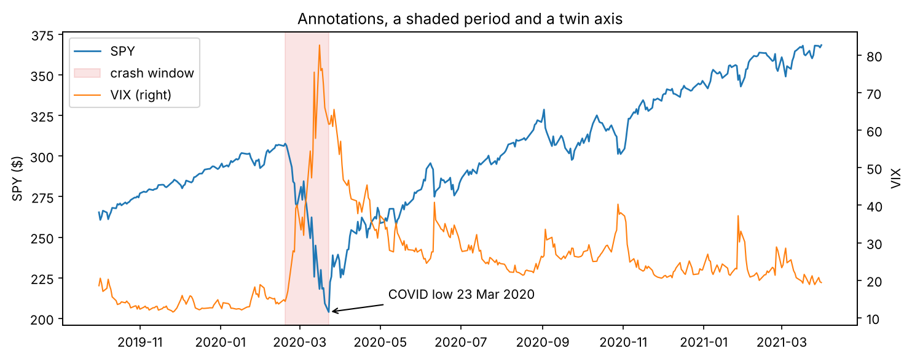
Trap
Twin y-axes let you make any two series look correlated by choosing the scales. Use them only for context (like the VIX here), never to argue that two things move together. For that, plot a scatter or a rolling correlation.
Heatmaps: a correlation matrix
corr = rets[["SPY", "QQQ", "EEM", "AAPL", "MSFT", "JPM", "XOM", "KO", "TLT", "GLD"]].loc["2015":].corr()
fig, ax = plt.subplots(figsize=(7, 6))
im = ax.imshow(corr, cmap="RdBu_r", vmin=-1, vmax=1) # diverging map centred at 0
ax.set_xticks(range(len(corr)), corr.columns, rotation=45, ha="right")
ax.set_yticks(range(len(corr)), corr.index)
for i in range(len(corr)):
for j in range(len(corr)):
ax.text(j, i, f"{corr.iloc[i, j]:.2f}", ha="center", va="center", fontsize=8,
color="white" if abs(corr.iloc[i, j]) > 0.6 else "black")
fig.colorbar(im, ax=ax, shrink=0.8, label="correlation")
ax.set_title("Daily return correlations, 2015 onward")
fig.tight_layout(); save_fig("corr_heatmap", fig)
plt.show()
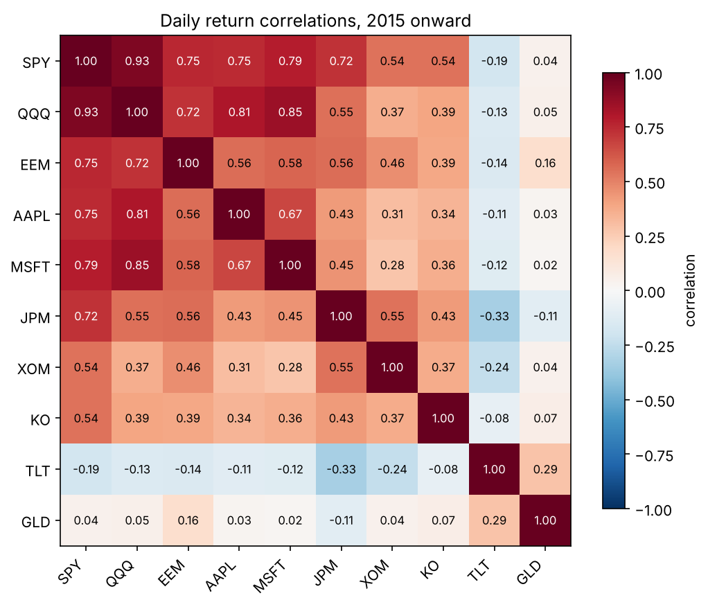
Tip
Choose the colour map by the meaning of the data. Sequential maps (viridis, Blues) for values from low to high, diverging maps (RdBu_r, coolwarm) for values around a meaningful centre such as 0, qualitative maps (tab10) for categories. Fix vmin and vmax so two heatmaps are comparable. Avoid jet and rainbow maps: they invent edges that are not in the data and fail for colour-blind readers.
Style: make the data the loudest thing
print(plt.style.available[:8], "...")
with plt.style.context("seaborn-v0_8-whitegrid"):
fig, ax = plt.subplots(figsize=(8, 3.5))
ax.plot(growth["SPY"], lw=1.5, color="#0f6b5c")
ax.plot(growth["TLT"], lw=1.5, color="#b4531a")
for t, c in [("SPY", "#0f6b5c"), ("TLT", "#b4531a")]:
ax.text(growth.index[-1], growth[t].iloc[-1], f" {t}", color=c, va="center", fontweight="bold")
ax.spines[["top", "right"]].set_visible(False)
log_axis(ax, "${:g}"); ax.set_ylabel("growth of $1")
ax.set_title("Direct labels instead of a legend", loc="left")
fig.tight_layout(); save_fig("styled", fig)
plt.show()
['Solarize_Light2', 'bmh', 'classic', 'dark_background', 'fast', 'fivethirtyeight', 'ggplot', 'grayscale'] ...
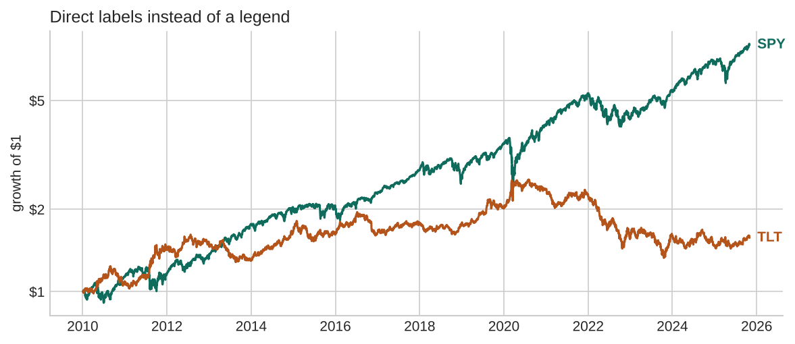
The habits that make charts honest and readable: label axes with units, start bar charts at zero, use a log scale for compounding series, label lines directly when there are only a few, keep colours consistent across a report (SPY is always the same colour), and remove everything that does not carry information.
Saving figures
fig, ax = plt.subplots(figsize=(4, 3))
ax.plot([1, 2, 3], [1, 4, 9])
fig.savefig(IMAGES / "demo.png", dpi=200, bbox_inches="tight") # raster, for web pages and slides
fig.savefig(IMAGES / "demo.svg", bbox_inches="tight") # vector, sharp at any zoom
plt.close(fig) # free memory in loops
import os
print(sorted(p.name for p in IMAGES.glob("demo.*")))
for p in IMAGES.glob("demo.*"):
os.remove(p)
['demo.png', 'demo.svg']
Use PNG at 150–200 dpi for screens, SVG or PDF for papers. When you make hundreds of charts in a loop, call plt.close(fig) each time.
pandas plotting: the quick look
pandas DataFrames have a .plot method that calls Matplotlib for you. It is perfect for a first look and returns an axes you can keep customising.
ax = close[["SPY", "TLT", "GLD"]].loc["2022"].pipe(lambda d: d / d.iloc[0]).plot(figsize=(8, 3.5), title="2022, rebased")
ax.set_ylabel("growth of $1"); ax.grid(alpha=0.3)
save_fig("pandas_plot", ax.figure)
plt.show()
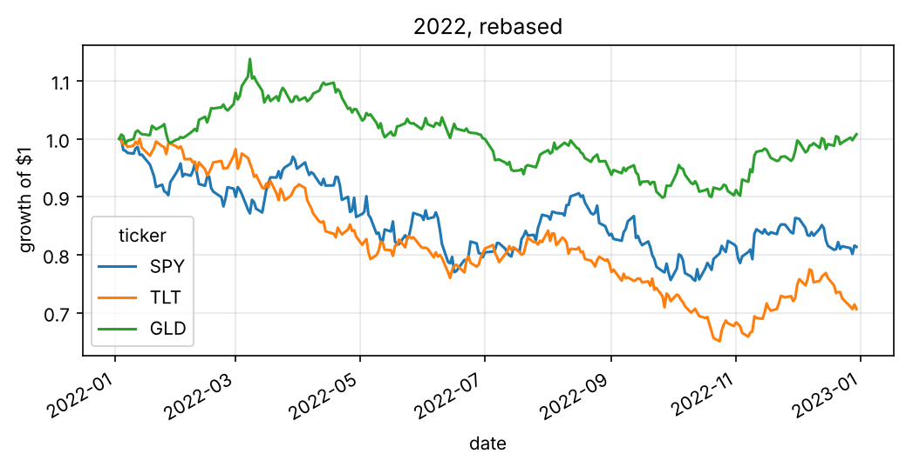
seaborn: statistical charts in one line
seaborn works best with long (tidy) data: one row per observation, with columns for the variables you want to map to x, y, colour and panels.
import seaborn as sns
sns.set_theme(style="whitegrid", context="notebook")
tidy = (rets[["SPY", "TLT", "GLD", "AAPL"]].loc["2015":]
.melt(ignore_index=False, var_name="ticker", value_name="ret").dropna().reset_index())
tidy["year"] = tidy["date"].dt.year
fig, axes = plt.subplots(1, 2, figsize=(11, 4))
sns.kdeplot(data=tidy, x="ret", hue="ticker", ax=axes[0], clip=(-0.06, 0.06), common_norm=False)
axes[0].set_xlim(-0.06, 0.06); axes[0].set_title("Smoothed distributions (KDE)")
vol_year = tidy.groupby(["year", "ticker"])["ret"].std().mul(np.sqrt(252)).reset_index(name="vol")
sns.lineplot(data=vol_year, x="year", y="vol", hue="ticker", marker="o", ax=axes[1])
axes[1].set_title("Annual volatility"); axes[1].yaxis.set_major_formatter(mtick.PercentFormatter(1.0))
fig.tight_layout(); save_fig("seaborn_kde_line", fig)
plt.show()
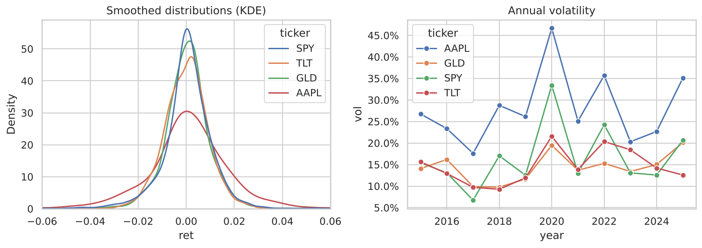
g = sns.pairplot(rets[["SPY", "TLT", "GLD", "XOM"]].loc["2015":].dropna().sample(1500, random_state=0),
corner=True, plot_kws={"s": 6, "alpha": 0.4}, diag_kws={"bins": 40})
g.figure.suptitle("Pair plot: every scatter at once", y=1.02)
save_fig("pairplot", g.figure)
plt.show()
mpl.rcParams.update(mpl.rcParamsDefault) # back to Matplotlib's defaults
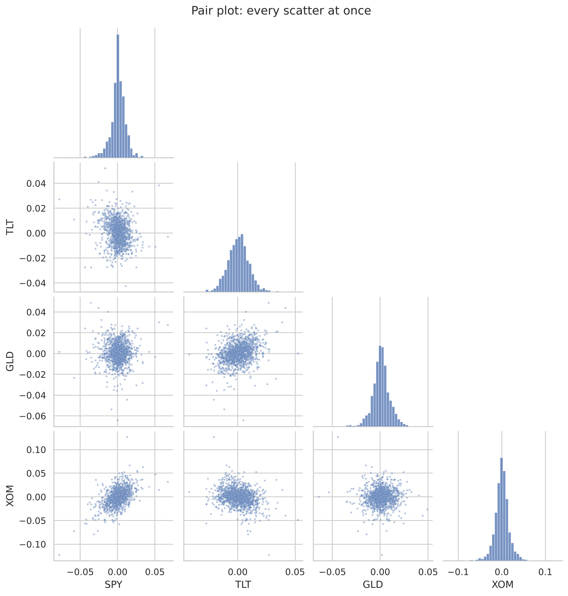
Plotly: interactive charts for the browser
Plotly draws charts in the browser: you can zoom, pan, hover to read values, and toggle series. It is the usual choice for dashboards. Below we build a candlestick chart with volume and a moving average, and save it as an HTML page; it is the playground of this chapter.
import plotly.graph_objects as go
from plotly.subplots import make_subplots
d = prices[prices.ticker == "SPY"].set_index("date").loc["2024-06":"2025-10"]
d = d.assign(ma50=d["close"].rolling(50).mean())
figp = make_subplots(rows=2, cols=1, shared_xaxes=True, row_heights=[0.75, 0.25], vertical_spacing=0.03)
figp.add_trace(go.Candlestick(x=d.index, open=d.open, high=d.high, low=d.low, close=d.close, name="SPY"), row=1, col=1)
figp.add_trace(go.Scatter(x=d.index, y=d.ma50, name="50-day MA", line=dict(width=1.5)), row=1, col=1)
figp.add_trace(go.Bar(x=d.index, y=d.volume, name="volume", marker_color="rgba(100,110,130,.5)"), row=2, col=1)
figp.update_layout(height=560, margin=dict(l=40, r=20, t=80, b=30), title="SPY daily candles (drag to zoom, double-click to reset)",
xaxis_rangeslider_visible=False, template="plotly_white",
legend=dict(orientation="h", y=1.02, yanchor="bottom", x=1, xanchor="right"))
figp.update_xaxes(rangebreaks=[dict(bounds=["sat", "mon"])]) # hide weekends
Path("animations").mkdir(exist_ok=True)
figp.write_html("animations/spy_candles.html", include_plotlyjs="cdn", full_html=True)
print("saved animations/spy_candles.html")
saved animations/spy_candles.html
Each candle shows a day's open, high, low and close: the body spans open to close (green if the close is higher), the thin wick spans the low to the high. Hover over a candle to read the four prices.
Quant view
Matplotlib for reports, papers and anything you save as an image; Plotly when someone needs to explore the chart; seaborn when you want a statistical chart of tidy data quickly. All three accept pandas objects, so the same DataFrame feeds all of them.
Animations
Matplotlib's FuncAnimation redraws a figure frame by frame and saves the result as a GIF or MP4. Here: how one year of daily returns builds a wealth curve, day by day, for a random strategy against the market.
from matplotlib.animation import FuncAnimation, PillowWriter
yr = rets["SPY"].loc["2024"].dropna()
rng = np.random.default_rng(1)
coin = np.where(rng.random(len(yr)) < 0.5, 1, -1) # a coin-flip long/short strategy
w_mkt, w_coin = (1 + yr).cumprod(), (1 + coin * yr).cumprod()
fig, ax = plt.subplots(figsize=(7, 3.6))
l1, = ax.plot([], [], lw=1.8, label="buy and hold SPY")
l2, = ax.plot([], [], lw=1.8, label="coin-flip long/short")
ax.set_xlim(yr.index[0], yr.index[-1]); ax.set_ylim(0.8, 1.35)
ax.axhline(1, color="k", lw=0.6); ax.legend(loc="upper left"); ax.set_ylabel("growth of $1")
ax.xaxis.set_major_formatter(mdates.DateFormatter("%b"))
title = ax.set_title("")
def update(k):
l1.set_data(yr.index[:k], w_mkt.iloc[:k]); l2.set_data(yr.index[:k], w_coin.iloc[:k])
title.set_text(f"2024, day {k}")
return l1, l2, title
anim = FuncAnimation(fig, update, frames=range(1, len(yr) + 1, 3), interval=60, blit=False)
anim.save(IMAGES / "wealth_race.gif", writer=PillowWriter(fps=18))
plt.close(fig)
print("frames:", len(range(1, len(yr) + 1, 3)))
frames: 84
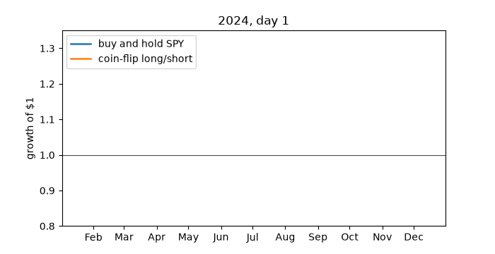
Putting it together: a one-page market report
The final figure combines everything: a mosaic layout, a log-scale growth chart with direct labels, a drawdown panel, a heatmap and a bar chart, consistent colours and a title that states the finding.
assets = ["SPY", "TLT", "GLD", "EEM"]
colors = dict(zip(assets, ["#0f6b5c", "#b4531a", "#c9a227", "#3a6fd0"]))
g = close[assets].loc["2015":].dropna(); g = g / g.iloc[0]
rr = rets[assets].loc["2015":].dropna()
stats = pd.DataFrame({
"CAGR": g.iloc[-1] ** (252 / len(g)) - 1,
"vol": rr.std() * np.sqrt(252),
"max DD": (g / g.cummax() - 1).min(),
})
stats["return/vol"] = stats["CAGR"] / stats["vol"]
fig = plt.figure(figsize=(12, 8), layout="constrained")
axd = fig.subplot_mosaic("AAB;CCD")
a = axd["A"]
for t in assets:
a.plot(g[t], color=colors[t], lw=1.3); a.text(g.index[-1], g[t].iloc[-1], f" {t}", color=colors[t], fontweight="bold", va="center")
log_axis(a, "${:g}"); a.set_title("Growth of $1 since 2015", loc="left"); a.spines[["top", "right"]].set_visible(False)
c = axd["C"]
for t in assets:
c.plot(g[t] / g[t].cummax() - 1, color=colors[t], lw=0.9)
c.yaxis.set_major_formatter(mtick.PercentFormatter(1.0)); c.set_title("Drawdowns", loc="left"); c.spines[["top", "right"]].set_visible(False)
b = axd["B"]
cm = rr.corr()
b.imshow(cm, cmap="RdBu_r", vmin=-1, vmax=1)
b.set_xticks(range(4), assets); b.set_yticks(range(4), assets)
for i in range(4):
for j in range(4):
b.text(j, i, f"{cm.iloc[i, j]:.2f}", ha="center", va="center", fontsize=9,
color="white" if abs(cm.iloc[i, j]) > 0.6 else "black")
b.set_title("Correlations", loc="left")
dax = axd["D"]
dax.barh(stats.index, stats["return/vol"], color=[colors[t] for t in stats.index])
dax.set_title("Return per unit of risk", loc="left"); dax.spines[["top", "right"]].set_visible(False)
best = stats["return/vol"].idxmax()
fig.suptitle(f"{best} had the best return per unit of risk since 2015; bonds and gold were the diversifiers", fontsize=14, x=0.01, ha="left")
save_fig("market_report", fig)
plt.show()
print(stats.round(3))
CAGR vol max DD return/vol ticker SPY 0.136 0.179 -0.337 0.764 TLT -0.005 0.151 -0.484 -0.036 GLD 0.114 0.147 -0.220 0.780 EEM 0.056 0.205 -0.398 0.271
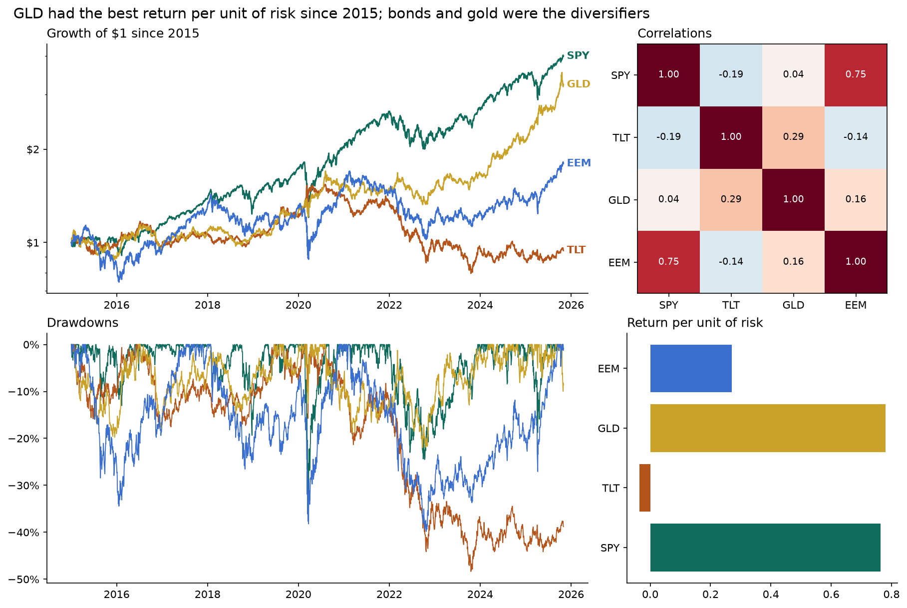
Exercises
Try it
- Plot the 10-year Treasury yield (
fred["DGS10"]) and the 3-month bill rate on one axes, shade the periods when the 3-month rate was above the 10-year (an inverted yield curve), and annotate the first day of the longest inversion. - Make a 2 × 5 grid of histograms of daily returns, one per ticker, with shared x-axes and the annualised volatility written in each panel's title.
- Draw a monthly returns heatmap for SPY: rows are years, columns are months, colours are returns with a diverging map centred at 0, and numbers in each cell.
- With Plotly, make an interactive line chart of rolling 63-day correlations between SPY and each of TLT, GLD and EEM, and save it as HTML.
- Improve Figure 3-2: use direct labels, consistent colours, and a title that states the main finding.
Solutions
# 1
y = fred[["DGS3MO", "DGS10"]].dropna()
inv = y["DGS3MO"] > y["DGS10"]
fig, ax = plt.subplots(figsize=(10, 3.5))
ax.plot(y["DGS10"], label="10-year"); ax.plot(y["DGS3MO"], label="3-month")
ax.fill_between(y.index, 0, 1, where=inv, transform=ax.get_xaxis_transform(), color="tab:red", alpha=0.15, label="inverted")
runs = (inv != inv.shift()).cumsum()
longest = inv.groupby(runs).sum().idxmax()
start = inv[runs == longest].index[0]
ax.annotate(f"inversion starts\n{start:%b %Y}", xy=(start, y.loc[start, "DGS10"]), xytext=(start - pd.Timedelta(days=900), 4.8), arrowprops=dict(arrowstyle="->"))
ax.legend(); ax.set_ylabel("%"); plt.show()
# 2
fig, axes = plt.subplots(2, 5, figsize=(14, 5), sharex=True)
for ax, t in zip(axes.ravel(), close.columns):
x = rets[t].dropna(); ax.hist(x, bins=80, color="tab:blue", alpha=0.7)
ax.set_title(f"{t}: {x.std()*np.sqrt(252):.0%}"); ax.set_xlim(-0.08, 0.08)
fig.tight_layout(); plt.show()
# 3
m = close["SPY"].resample("ME").last().pct_change(fill_method=None).dropna()
tab = m.groupby([m.index.year, m.index.month]).first().unstack()
fig, ax = plt.subplots(figsize=(10, 6))
lim = np.nanmax(np.abs(tab.values))
ax.imshow(tab, cmap="RdBu", vmin=-lim, vmax=lim, aspect="auto")
ax.set_xticks(range(12), ["J", "F", "M", "A", "M", "J", "J", "A", "S", "O", "N", "D"]); ax.set_yticks(range(len(tab)), tab.index)
for i in range(tab.shape[0]):
for j in range(tab.shape[1]):
v = tab.iloc[i, j]
if pd.notna(v):
ax.text(j, i, f"{v:.0%}", ha="center", va="center", fontsize=7)
plt.show()
# 4
import plotly.express as px
rc = pd.DataFrame({t: rets["SPY"].rolling(63).corr(rets[t]) for t in ["TLT", "GLD", "EEM"]}).dropna()
px.line(rc, title="63-day correlation with SPY").write_html("animations/exercise_corr.html", include_plotlyjs="cdn")
os.remove("animations/exercise_corr.html")
What's next
The toolkit is complete: arrays, tables and charts. Part 2 begins with the statistics of financial returns: what real returns look like, which properties a model must respect, and how to tell a real effect from luck.